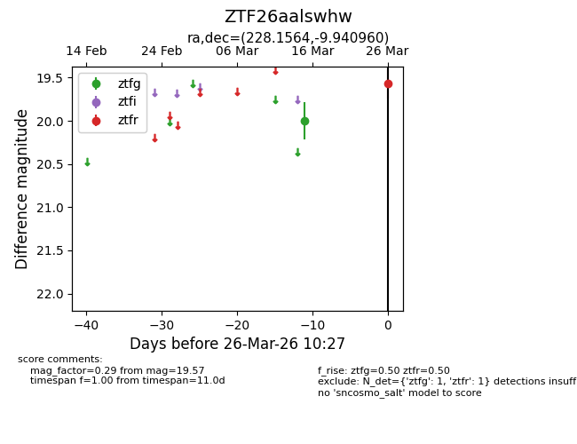
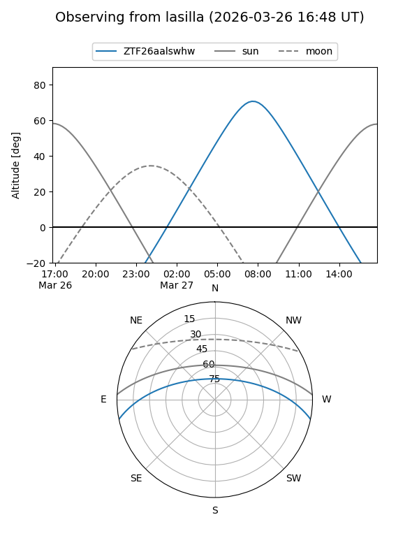
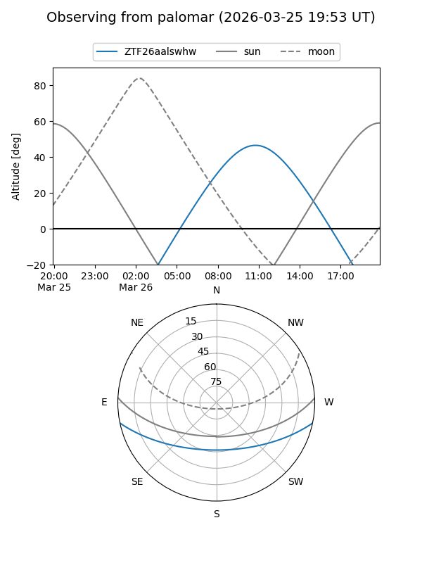

ZTF26aalswhw
Target ZTF26aalswhw at 2026-03-26 10:29
Aliases and brokers:
FINK: link
Lasair: link
ALeRCE: link
alt names
ZTF26aalswhw (ztf,fink_ztf)
Coordinates:
equatorial (ra, dec) = 228.1564,-9.94096
equatorial (HMS+DMS) = 15:12:37.53,-09:56:27.46
galactic (l, b) = (350.5035,+39.55039)
Flags:
Photometry:
last ztfg=20.00, ztfr=19.57
1 ztfg, 1 ztfr detections
Lightcurve

Visibility


Additional plots